Córtex Estudos · 4º Semestre · Anato Pato II · Aula 02
Patologia do Pâncreas
Histofisiologia, pancreatite aguda e crônica e o adenocarcinoma ductal — a aula da Profa. Fernanda Giudice explicada do zero, com o "caminho de ponta a ponta" da patogênese que ela avisou que cai em prova.
1 · O pâncreas normal: anatomia, ductos e histologia
🩺 O caso que abriu a discussão
Mulher, 48 anos, procura atendimento com dor abdominal intensa e vômitos, agudamente doente. Laboratório: amilase e lipase elevadas. Imagem: cálculo biliar impactado na região onde o colédoco encontra o ducto pancreático principal. A aula inteira responde: como um cálculo ali vira um pâncreas se autodigerindo?
Anatomia que a patologia usa
- Órgão retroperitoneal, transversal, encaixado na concavidade em "C" do duodeno e estendendo-se até o hilo do baço; ~20 cm, ~90 g (H) / 85 g (M) — o peso muda em processos patológicos.
- Partes: cabeça (alguns autores separam o processo uncinado), colo, corpo e cauda.
- Ductos: o principal (Wirsung) desemboca na papila maior (de Vater); antes disso ele se une ao ducto biliar comum (colédoco), formando a ampola hepatopancreática (de Vater) — um canal comum para bile e suco pancreático. O acessório (Santorini) drena pela papila menor, ~2 cm acima. Grave esse encontro: é ali que um cálculo biliar consegue travar o pâncreas inteiro.
Histologia: um órgão, duas glândulas
Organização do parênquima
- 1Cápsula conjuntiva + septos — dividem o órgão em lóbulos (órgão lobular — visível na lâmina).
- 2Porção EXÓCRINA (80–85%) — células acinares: serosas, piramidais, dispostas radialmente em torno de uma luz central; sintetizam e armazenam as enzimas em grânulos de zimogênio. Cada ácino drena para um ducto intercalar → intralobular → interlobular → ducto principal.
- 3Porção ENDÓCRINA (1–2%) — ~1 milhão de ilhotas de Langerhans: micro-órgãos endócrinos, cordões de células poligonais envoltos por fina cápsula conjuntiva e uma rede rica de capilares fenestrados (o hormônio cai direto na circulação). Maioria = células beta (insulina); alfa (glucagon) e delta (somatostatina) — na prática, só a imuno-histoquímica distingue os tipos.
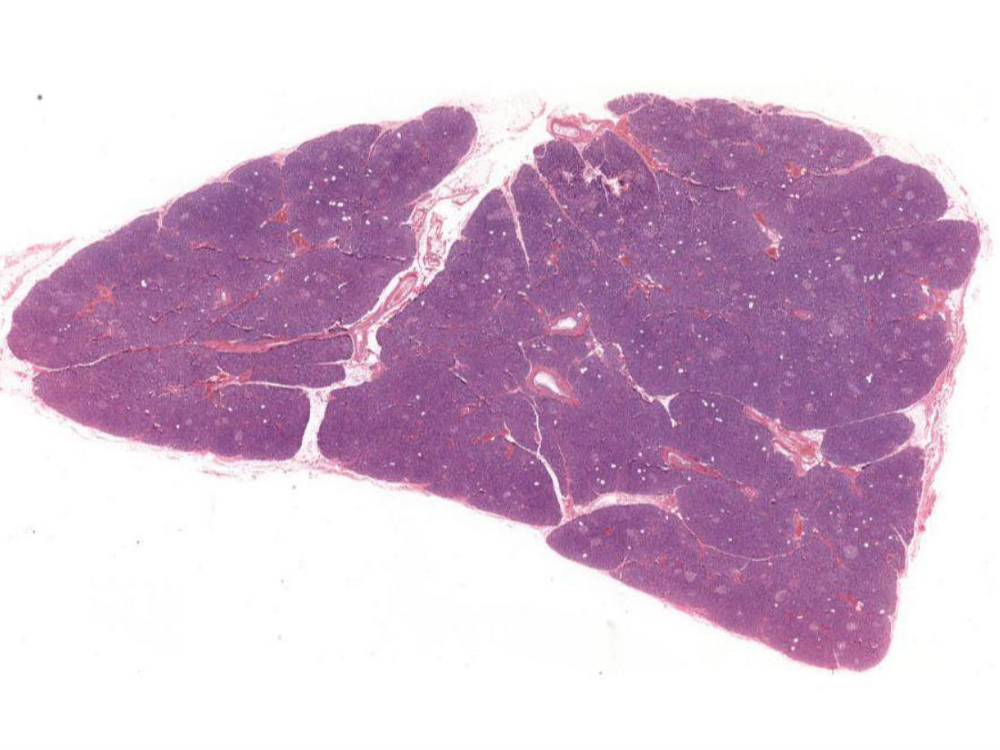
🎯 Célula centroacinosa = patognomônica do pâncreas
Na luz de cada ácino aparecem células claras — as células centroacinosas, o comecinho do ducto intercalar. Elas são exclusivas do pâncreas: é o que diferencia, na lâmina, o pâncreas da parótida (que também é glândula serosa de ácinos, mas não tem centroacinosas). Pergunta clássica de prova prática.
2 · Como o pâncreas não se digere: pró-enzimas e as 5 proteções
O suco pancreático carrega um arsenal: pró-elastase, tripsinogênio, calicreinogênio, quimotripsinogênio, pró-carboxipeptidase, pró-fosfolipases…
🎯 As duas exceções que já saem prontas
Amilase e lipase são as ÚNICAS enzimas secretadas já ativas — todo o resto nasce como pró-enzima inerte. Guarde: são elas que começam o estrago quando o suco fica represado, e são elas que dosamos no sangue para o diagnóstico.
Cinco mecanismos impedem a autodigestão (a professora avisou: "posso pedir para citar dois na prova"):
- Empacotamento — as enzimas ficam sequestradas nos grânulos de zimogênio, envoltos por membrana, dentro das células acinares.
- Pró-enzimas inativas — a maioria é sintetizada inerte (exceto amilase e lipase, que são rapidamente diluídas pelo fluido rico em bicarbonato e água e carregadas ao intestino).
- Ativação só no duodeno — a enteropeptidase (enteroquinase) duodenal converte tripsinogênio → tripsina, e é a tripsina que ativa todas as outras pró-enzimas. Longe do pâncreas, portanto.
- Inibidores de tripsina — o gene SPINK1 codifica o PSTI (inibidor de secreção pancreática de tripsina), secretado pelas próprias células acinares e ductais: qualquer tripsina ativada "antes da hora" é neutralizada.
- Resistência acinar — as células acinares toleram razoavelmente tripsina, quimotripsina e fosfolipase A2 (até certo ponto — grandes quantidades vencem).
3 · Quem manda o pâncreas secretar
- Quando o quimo ácido chega ao duodeno (pH < 4,5), as células enteroendócrinas das vilosidades do duodeno/jejuno liberam secretina e colecistoquinina (CCK); o nervo vago também estimula.
- Secretina → suco fluido, rico em bicarbonato (produzido pelas células dos ductos intercalares) para neutralizar o pH do quimo.
- CCK → suco rico em enzimas (estimulada por aminoácidos, ácidos graxos e suco gástrico).
- As duas agem integradas: o suco final precisa de enzimas e de água + bicarbonato.
4 · Pancreatite aguda: definição e reversibilidade
🔗 Por que reversível? (conceito da Pato 1)
Reparo tecidual = regeneração ou cicatrização. As células acinares são estáveis: removido o agente, as remanescentes proliferam e regeneram a morfofisiologia — sem cicatriz. É exatamente o que a crônica perde: lá entra fibrose, e fibrose não volta.
A maioria dos episódios é leve e autolimitada, mas o espectro vai até formas com risco de vida.
5 · Patogênese: o tripsinogênio e os 3 mecanismos
🎯 A chave que "não podem errar"
Pancreatite aguda = autodigestão do pâncreas por enzimas ativadas INAPROPRIADAMENTE — e o gatilho de tudo é a ativação inapropriada do TRIPSINOGÊNIO dentro do pâncreas (o normal seria ativá-lo só no duodeno). A tripsina formada ativa as demais pró-enzimas em cascata. Sem tripsinogênio ativado, não há pancreatite.
O que a tripsina solta faz: ativa pró-fosfolipase e pró-elastase (a fosfolipase degrada células adiposas; a elastase destrói as fibras elásticas da parede dos vasos — por isso há pancreatite com hemorragia); e converte pré-calicreína em calicreína — ativação intrínseca do complemento (mais inflamação) e trombose de pequenos vasos (congestão e ruptura de vasos já fragilizados).
Mecanismo ① — Obstrução ductal (o mais comum)
O "caminho de ponta a ponta" que ela mandou saber de trás pra frente
- 1Cálculo ou lama biliar impacta na ampola de Vater — o suco pancreático não drena; a pressão nos ductos intrapancreáticos sobe e fluido rico em enzimas se acumula no interstício.
- 2A lipase (já ativa!) encontra gordura — esteatonecrose local. Necrose caminha com inflamação: tecidos lesados, miofibroblastos periacinares e leucócitos liberam citocinas (IL-1β, IL-6, TNF, PAF — não precisa decorar a lista).
- 3Inflamação → edema intersticial — extravasamento da microvasculatura; o edema comprime os vasos e compromete o fluxo local.
- 4Isquemia → NECROSE das células acinares — a célula que necrosa rompe tudo: grânulos de zimogênio E lisossomos.
- 5O pulo do gato — as enzimas lisossomais (hidrolases) encontram o tripsinogênio e o ativam dentro do pâncreas → tripsina → cascata de pró-enzimas → autodigestão generalizada.
⚠️ Etiologia ≠ patogênese (pegadinha anunciada)
No caso da paciente com cálculo: a etiologia é o cálculo biliar. A patogênese é a historinha completa acima. Responder "o cálculo ativou de forma inapropriada" não vale — ela quer o caminho de ponta a ponta.
Mecanismo ② — Lesão primária das células acinares
Algo destrói a célula acinar diretamente: vírus da caxumba (tropismo por células acinares — e pela parótida), álcool, drogas/medicamentos, trauma direto. A célula necrosada libera pró-enzimas + hidrolases lisossomais → mesma cascata (o tripsinogênio nem chegou ao duodeno; foi ativado no próprio pâncreas).
Mecanismo ③ — Transporte intracelular defeituoso
Na célula acinar normal, enzimas digestivas e hidrolases lisossomais viajam em rotas separadas. No defeito, as pró-enzimas são empacotadas junto com as hidrolases lisossomais; os lisossomos se rompem, as pró-enzimas são ativadas dentro da célula. Álcool e obstrução ductal favorecem essa falha.
6 · Etiologias: biliar + álcool = 80% (e a genética)
- Doença biliar (cálculos) + alcoolismo respondem por ~80% dos casos no Ocidente. A obstrução por cálculo é o evento precipitante mais comum da ativação do tripsinogênio. Curiosidade real: até verminose (áscaris obstruindo a papila) já causou pancreatite.
- Pancreatite alcoólica tem prognóstico PIOR que a biliar: da biliar você remove o agente (tira o cálculo/vesícula); do álcool, é bem mais difícil "retirar a etiologia".
- O álcool ataca por vários flancos: deixa o suco pancreático mais denso e proteico → concreções (cálculos proteicos que calcificam dentro dos ductos); contrai o esfíncter de Oddi (o músculo da ampola de Vater); é tóxico direto para a célula acinar; e favorece o transporte intracelular defeituoso.
- Genética: PRSS1 mutado → tripsina resistente à inativação (herança autossômica dominante): qualquer tripsina ativada por engano dispara a doença. SPINK1 mutado → perde-se o inibidor PSTI (herança recessiva). As duas mutações também aumentam o risco de câncer de pâncreas.
7 · Morfologia: três formas + esteatonecrose
| Forma | Gravidade | O que a lâmina mostra |
|---|---|---|
| Aguda intersticial | Branda (a maioria) | Inflamação leve (neutrófilos), edema intersticial e focos de esteatonecrose no pâncreas e na gordura peripancreática — o parênquima acinar ainda de pé |
| Necrosante aguda | Grave | Esteatonecrose + necrose do parênquima: ácinos, ductos e até ilhotas; lesões vasculares com focos hemorrágicos; necrose gordurosa também em omento, mesentério e subcutâneo |
| Hemorrágica | A mais grave | Necrose parenquimatosa extensa + hemorragia abundante tomando a glândula — "não se reconhece mais o órgão" |
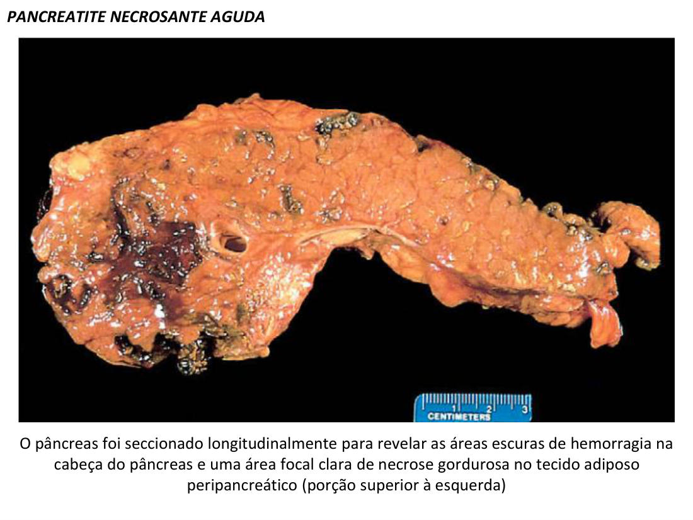
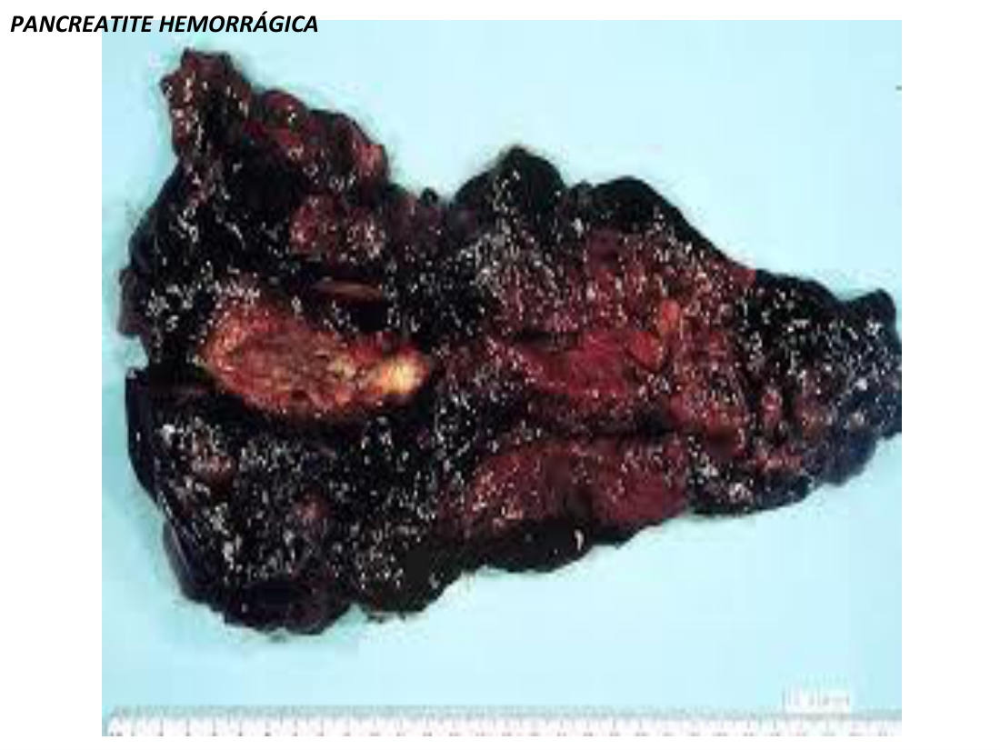
Esteatonecrose e saponificação (revisão que ela fez questão de repetir)
- A lipase quebra os triglicérides dos adipócitos rompidos → libera ácidos graxos → eles reagem com o cálcio do interstício → sabões insolúveis de cálcio = reação de saponificação.
- Macro: depósitos brancacentos com aspecto de "cera de vela" (no pâncreas, mesentério, omento…). Micro: contornos-fantasma de adipócitos (células sem núcleo, "células fantasmas") com depósitos basofílicos granulares azulados de cálcio, circundados por inflamação.
- Vale para qualquer adipócito que rompa (trauma de mama, por exemplo) — onde há adipócito roto + lipase, há saponificação.
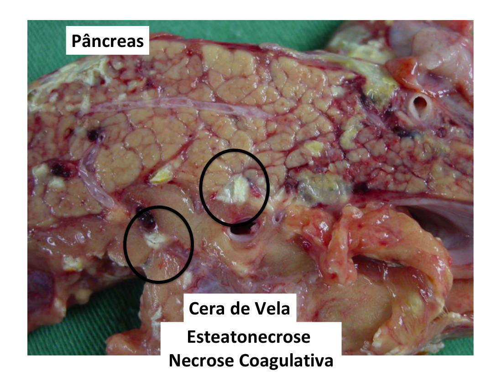
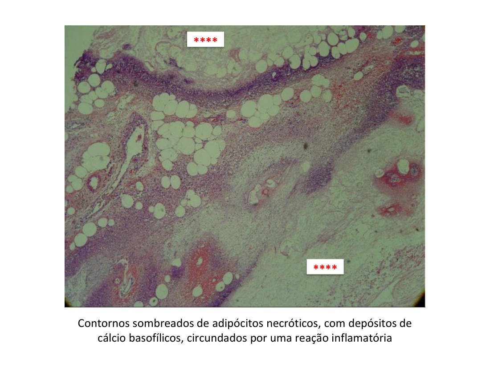
8 · Clínica, diagnóstico (2 de 3) e estratificação
- Clínica: dor abdominal intensa e constante, epigástrica, muitas vezes referida na parte superior das costas ("dor em faixa"), de leve a incapacitante; vômitos. É abordada como emergência médica.
🎯 Diagnóstico = 2 de 3 critérios (e NÃO é biópsia!)
- Clínica compatível (a dor típica);
- Amilase e lipase elevadas ≥3× o valor de referência (ela citou "3 a 5×" — "isso está em prova da vida, não só na minha");
- Exame de imagem mostrando pâncreas aumentado/inflamado (TC).
Ela repetiu duas vezes: se a pergunta for "qual exame laboratorial", a resposta é dosagem de amilase e lipase — não biópsia. Pancreatite não se biopsia.
- Cinética: a amilase sobe primeiro (primeiras 24h — há mais amilase disponível) e a lipase sobe depois (72–96h). Amilase não é exclusiva do pâncreas (glândulas salivares também têm); lipase é específica.
- O nível de elevação NÃO se correlaciona com a gravidade da doença — outro aviso de prova.
- Extras: glicosúria em ~10% (ilhotas atingidas); hipocalcemia = o cálcio está sendo consumido nos sabões da esteatonecrose — se persistente, mau prognóstico.
- Estratificação (depois do diagnóstico): critérios de Atlanta modificados (leve / moderadamente grave / grave — conforme falência orgânica >48h e complicações) e de Petrov; o mais conhecido é o de Ranson (há também SOFA, Marshall, Glasgow, APACHE II). PCR > 150 mg/dL em 48h = alto risco de necrose pancreática. A necrose vista na TC não tem correlação uniforme com mortalidade/falência (UpToDate). Sempre avaliar complicações locais (necrose, abscesso, pseudocisto) e sistêmicas (falências orgânicas).
- Tratamento: "descansar" o pâncreas — restrição total da ingestão oral + analgesia + fluidos intravenosos. O objetivo é deixar a lesão reversível se resolver.
9 · Complicações
- Sistêmicas (formas graves): enzimas e citocinas caem na circulação → resposta inflamatória explosiva: SARA (síndrome da angústia respiratória aguda), choque com necrose tubular renal aguda, CIVD, hemólise, leucocitose, retenção de fluidos, colapso vascular, necrose gordurosa difusa. ~5% das formas graves morrem de choque na 1ª semana.
- Sinais de Grey-Turner e Cullen: equimoses em flanco (Grey-Turner) e periumbilical (Cullen) = hemorragia retroperitoneal, 24–48h após ruptura do parênquima — pior prognóstico, caracteriza pancreatite grave.
- Paniculite: inflamação/necrose gordurosa do subcutâneo por enzimas que extravasaram. Icterícia: por coledocolitíase obstruindo a via biliar ou pela contração do esfíncter de Oddi (álcool). Xantomas: tumorações gordurosas de pele da hipertrigliceridemia — o excesso de quilomícrons congestiona capilares pancreáticos e contribui para isquemia: quem tem xantoma tem mais risco de pancreatite (não significa que tenha).
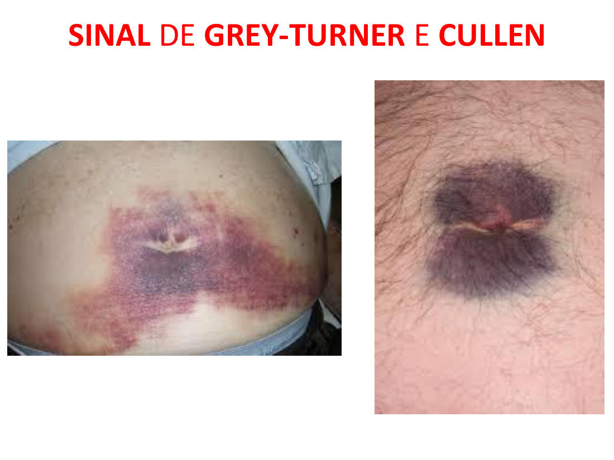
Pseudocisto × cisto × abscesso
| Cisto verdadeiro | Pseudocisto | Abscesso | |
|---|---|---|---|
| Cavidade revestida por… | Epitélio | Tecido de granulação (neovasos, fibroblastos, macrófagos) | Parede inflamatória em cavidade neoformada |
| Conteúdo | Sólido ou líquido | Suco pancreático liquefeito (área de necrose que não cicatrizou) | Pus (neutrófilos, necrose liquefeita) |
| Risco | — | Romper/extravasar enzimas → nova inflamação; conduta: acompanhar, aspirar/drenar | Infecção com destruição de lóbulos e ductos |
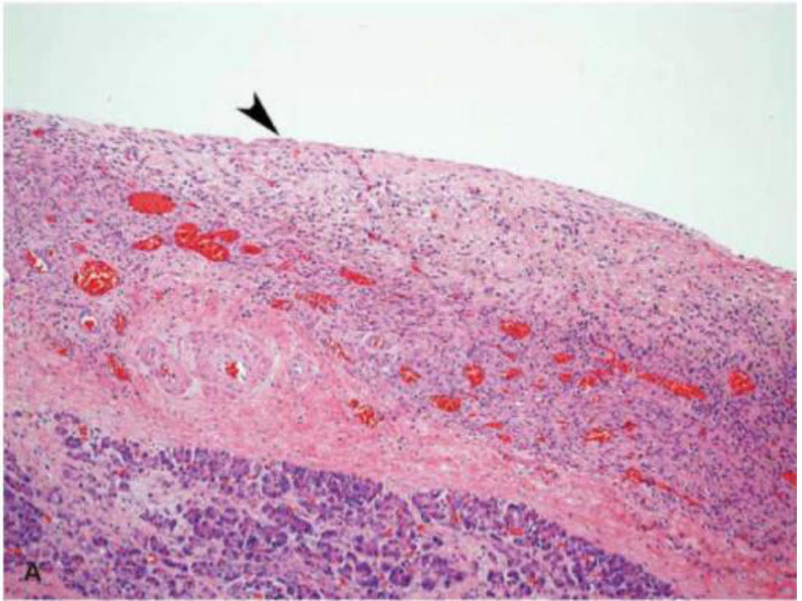
10 · Pancreatite crônica: fibrose irreversível
- Quase todo paciente com episódios repetidos de pancreatite aguda evolui para crônica: fibrose perilobular → distorção ductal → secreções alteradas → mais episódios → mais fibrose.
- Mecanismos: ① obstrução ductal por CONCREÇÕES — cálculos proteicos do suco denso (típicos do alcoolismo) que podem calcificar (carbonato de cálcio) e obstruir ainda mais; ② efeito tóxico direto do álcool e metabólitos sobre as células acinares; ③ estresse oxidativo induzido por álcool — radicais livres, oxidação lipídica de membrana, fatores de transcrição (AP-1, NF-κB), quimiocinas que atraem mononucleares, fusão de lisossomos com grânulos de zimogênio.
🎯 TGF-β e PDGF → células estreladas → fibrose (guardar as duas siglas)
Nos episódios repetidos, os mononucleares (macrófagos) que chegam produzem as citocinas PRÓFIBROGÊNICAS: TGF-β e PDGF. Elas ativam as células estreladas (estelares) periacinares — miofibroblastos quiescentes ao redor dos ácinos — que passam a produzir colágeno: fibrose e remodelamento da matriz. É o mesmo mecanismo da cirrose hepática (células estreladas do fígado).
- Causas: a mais comum é o álcool a longo prazo (homens de meia-idade). Menos comuns: obstruções prolongadas (cálculos, neoplasias, pseudocistos, trauma), pâncreas divisum (malformação em que a maior parte da secreção drena pela papila menor — estenose relativa → pancreatites de repetição; frequentemente rotulada de "idiopática" por quem não pensa nela — a professora publicou artigo sobre isso), pancreatite hereditária (PRSS1/SPINK1) e mutações do CFTR (fibrose cística: menos bicarbonato ductal → suco denso → concreções; presentes em 25–30% das "idiopáticas").
- Morfologia: fibrose parenquimatosa substituindo ácinos (menos ácinos, menores), ductos dilatados com concreções eosinofílicas aderidas, epitélio ductal atrófico/hiperplásico ou com metaplasia escamosa, infiltrado mononuclear em torno de lóbulos e ductos; ilhotas relativamente poupadas — incorporadas ao tecido esclerótico, podem "se fundir" e por fim desaparecer.
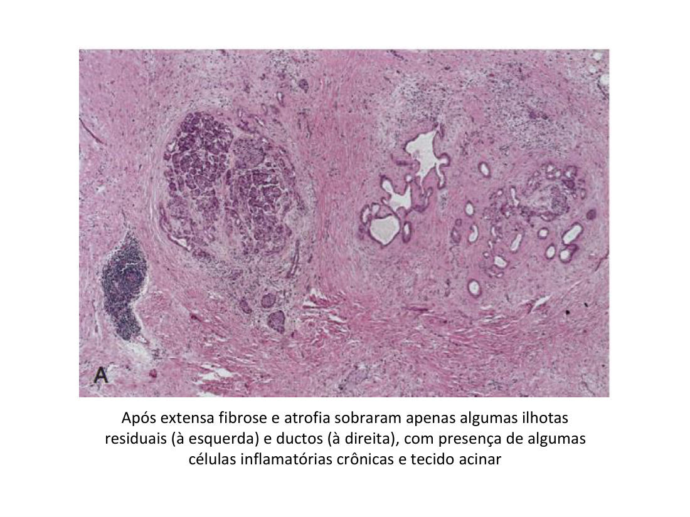
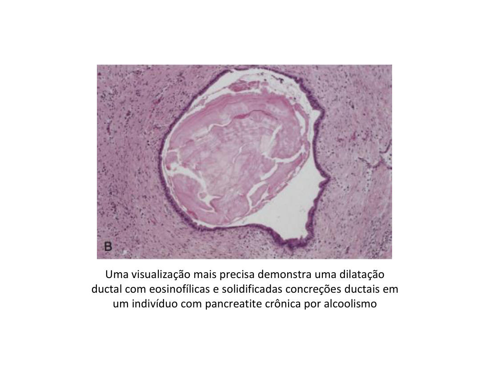
⚠️ Pancreatite autoimune (esclerosante linfoplasmocítica) — "cai em prova"
Forma distinta de pancreatite crônica: infiltrado inflamatório misto centrado nos ductos, venulite e aumento de células produtoras de IgG4. Importa reconhecer porque mimetiza o câncer de pâncreas (órgão denso, endurecido, função comprometida) — mas responde à corticoterapia. Confundir as duas muda tudo.
- Clínica: dor abdominal recorrente (moderada a grave, ou leve, ou persistente; dorso), desencadeada por álcool, excessos alimentares e opiáceos (contraem o esfíncter de Oddi). Pode ser silenciosa até se anunciar como insuficiência pancreática (má absorção → perda de peso, edema hipoalbuminêmico) e diabetes (destruição das ilhotas). Ataques de icterícia/indigestão podem ocorrer.
- Laboratório-pegadinha: na crise pode haver elevação leve de amilase — mas na doença de longa data as enzimas podem estar normais ou baixas: a destruição acinar "apagou as pistas diagnósticas".
- Complicações: pseudocistos; pancreatite hereditária → 40% de risco de câncer pancreático ao longo da vida.
11 · Adenocarcinoma ductal invasor
- Neoplasia maligna dos DUCTOS pancreáticos (daí "adeno" — origem glandular ductal, não acinar) — a neoplasia mais comum do pâncreas; adultos >50 anos.
- Clínica: dor abdominal superior + perda de peso acentuada. Tumores da cabeça (local mais comum) podem obstruir o colédoco → icterícia, às vezes o primeiro sinal da doença — a anatomia da ampola explicando a clínica de novo.
- Fatores de risco: diabetes, tabagismo, pancreatite crônica, displasia dos ductos (atipias: pleomorfismo, hipercromasia, mitoses atípicas — lesão precursora), dieta rica em gordura (+ PRSS1/SPINK1 hereditárias).
- Prognóstico muito ruim: a maioria morre em <1 ano do diagnóstico — o crescimento elimina a chance cirúrgica: invasão perineural, invasão precoce além do pâncreas e metástases precoces para linfonodos e fígado (vias linfática e hematogênica).
- Diagnóstico: imagem + citologia por PAAF (punção aspirativa por agulha fina) + core biopsy (agulha grossa).
- Macro: massa mal delimitada, irregular, pardo-clara e FIRME — pela intensa fibrose intratumoral (desmoplasia). Por isso é difícil distinguir da pancreatite crônica a olho nu — que, aliás, costuma existir ao redor do tumor.
- Micro: infiltração desordenada de glândulas em estroma fibrótico, células isoladas e em agrupamentos, invasão perineural e angiolinfática comuns — e um pleomorfismo nuclear impressionante (até 4× de diferença de tamanho nuclear entre células da mesma glândula).
🎯 O pleomorfismo é a chave
Na lâmina, crônica e câncer se parecem (fibrose nos dois). O que fecha o câncer é a atipia: glândulas desordenadas invadindo + pleomorfismo nuclear marcado. "Vocês erram na prova colocando pancreatite crônica — olhem o pleomorfismo."
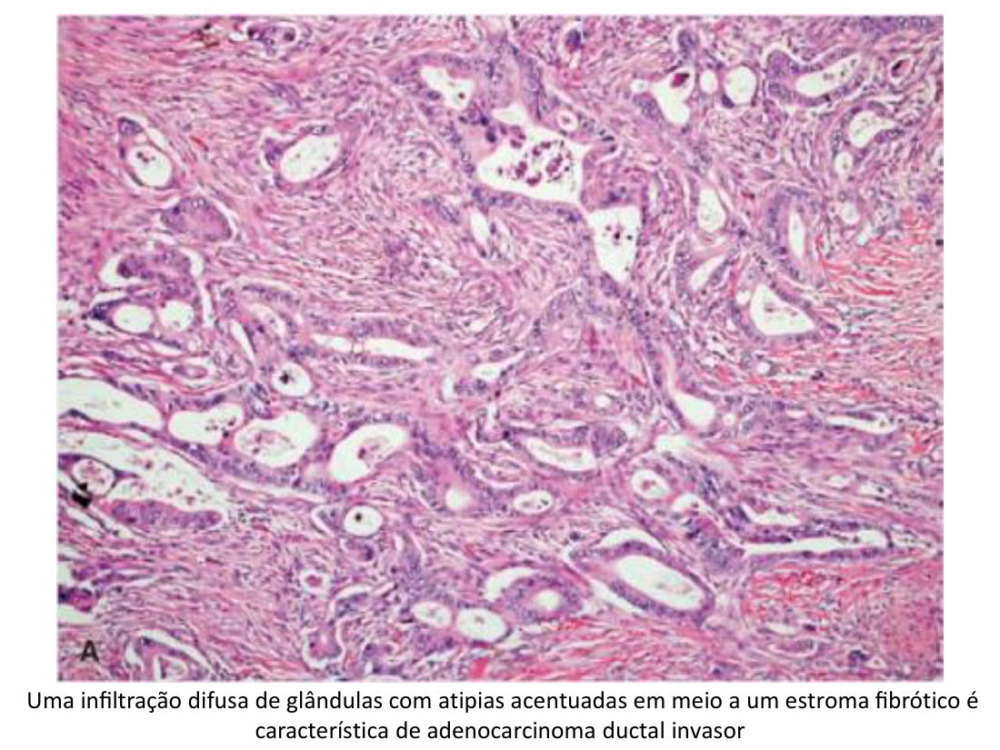
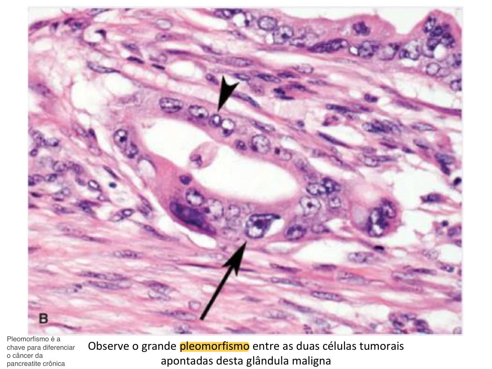
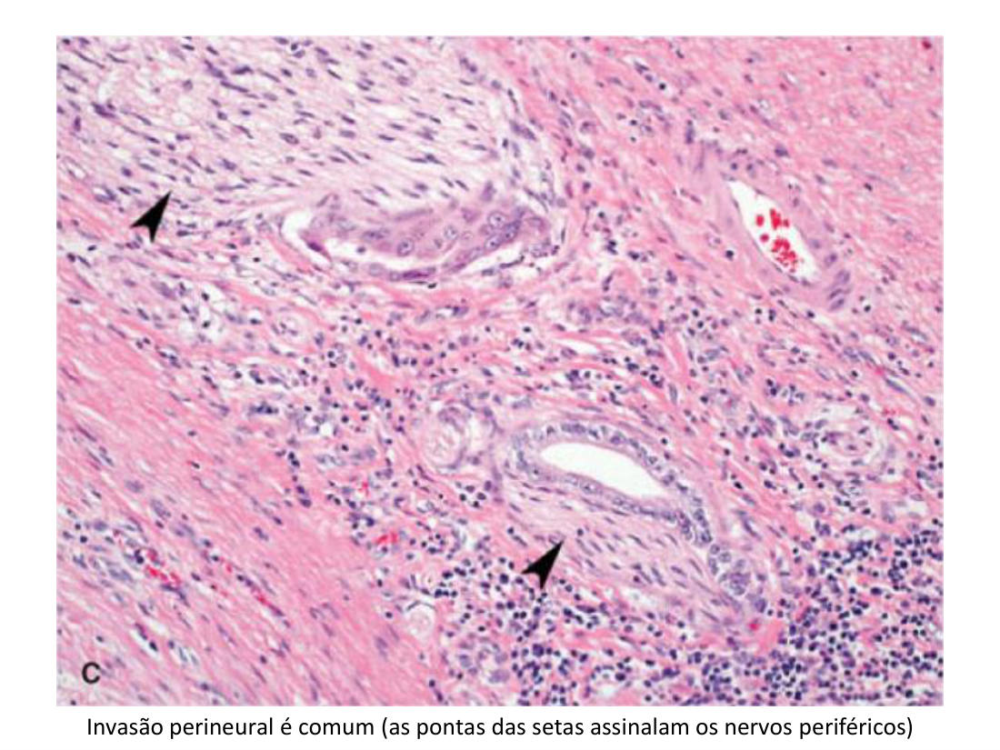
🩺 O caso que fechou a aula
Homem, 62 anos, longa história de tabagismo, procura atendimento por dor abdominal que piorou e perda não intencional de 11,3 kg em 3 meses. TC: massa na cabeça do pâncreas. PAAF: células malignas; já havia acometimento de linfonodos peripancreáticos. Tratamento tentado — óbito 8 meses depois. O retrato do prognóstico do tumor.
✅ Resumo rápido da aula
- Normal: retroperitoneal; Wirsung+colédoco → ampola de Vater → papila maior; Santorini → menor. Exócrino 80–85% (ácinos serosos, zimogênio) · endócrino 1–2% (ilhotas, beta/insulina). Célula centroacinosa = patognomônica (vs parótida).
- Proteções: zimogênio empacotado · pró-enzimas (exceto amilase e lipase, já ativas) · ativação só no duodeno (enteroquinase → tripsina) · SPINK1/PSTI · resistência acinar. Secretina = bicarbonato · CCK = enzimas.
- Aguda: lesão REVERSÍVEL (regeneração); chave = tripsinogênio ativado inapropriadamente. 3 mecanismos: obstrução (cálculo na ampola → pressão → lipase → esteatonecrose → inflamação/edema → isquemia → necrose acinar → hidrolases ativam tripsinogênio), lesão acinar direta (caxumba, álcool, trauma), transporte defeituoso.
- Etiologia: biliar + álcool = 80%; alcoólica pior que biliar; PRSS1 (dominante) / SPINK1 (recessiva) — ambas ↑risco de CA.
- Morfo: intersticial (branda) → necrosante (necrose de parênquima) → hemorrágica. Esteatonecrose = saponificação (ácidos graxos + Ca²⁺ = "cera de vela"; necrose coagulativa; liquefativa = cérebro/suprarrenal).
- Dx = 2 de 3: clínica + amilase/lipase ≥3× + imagem. Não é biópsia. Amilase 24h (inespecífica) · lipase 72–96h (específica) · nível ≠ gravidade · hipocalcemia persistente = mau sinal. Estratificar: Atlanta/Petrov/Ranson; PCR>150 = risco de necrose. Tto: jejum + analgesia + fluidos.
- Complicações: SARA, choque/NTA, CIVD; Grey-Turner (flanco) + Cullen (periumbilical) = hemorragia retroperitoneal grave; pseudocisto = cavidade SEM epitélio (tecido de granulação) ≠ abscesso (pus).
- Crônica: FIBROSE irreversível; concreções (cálculos proteicos ductais ≠ cálculo biliar); TGF-β + PDGF → células estreladas → colágeno (igual cirrose); álcool é a causa nº 1; pâncreas divisum, CFTR, hereditária (40% CA). Enzimas podem estar normais na doença longa. Insuficiência exócrina + DM. Autoimune IgG4: mimetiza câncer, responde a corticoide.
- Adenocarcinoma ductal: o mais comum; >50a; cabeça → icterícia como 1º sinal; desmoplasia (parece crônica) — pleomorfismo é a chave; invasão perineural; PAAF/core; <1 ano de sobrevida na maioria.
🧫 Resumão Pré-Prova — Patologia do Pâncreas
Revisão da véspera · Anato Pato II · Aula 02 (Profa. Fernanda) · só o que foi enfatizado
- Retroperitoneal, no "C" do duodeno até o hilo do baço; ~20 cm; cabeça (+ proc. uncinado), colo, corpo, cauda.
- Ductos: principal (Wirsung) + colédoco = ampola de Vater → papila MAIOR · acessório (Santorini) → papila MENOR (~2 cm acima).
- Exócrino 80–85% (ácinos serosos; grânulos de zimogênio; ducto intercalar→intralobular→interlobular→principal) · Endócrino 1–2% (ilhotas; maioria = beta/insulina; capilares fenestrados; imuno-histoquímica distingue células).
- Célula CENTROACINOSA = patognomônica do pâncreas — diferencia da parótida (também serosa) na prova prática.
- Secretina (pH duodenal <4,5): suco fluido rico em BICARBONATO (células dos ductos intercalares) · CCK: suco rico em ENZIMAS · + nervo vago. Trabalham juntas.
- Definição: dor abdominal súbita + enzimas elevadas; lesão REVERSÍVEL (células acinares estáveis → regeneração). Doença do EXÓCRINO.
- Chave: ativação INAPROPRIADA do TRIPSINOGÊNIO no pâncreas ("não podem errar"). Tripsina → ativa pró-fosfolipase (adipócitos) e pró-elastase (parede de vasos → hemorragia) + pré-calicreína→calicreína (complemento, trombose de pequenos vasos).
- ② Lesão acinar direta: caxumba (tropismo), álcool, drogas, trauma. ③ Transporte defeituoso: pró-enzimas empacotadas junto com hidrolases lisossomais.
- Causas: biliar + álcool = 80%. Alcoólica tem prognóstico PIOR que biliar (não dá pra "tirar" o agente). Álcool: suco denso→concreções + contrai Oddi + tóxico direto + transporte defeituoso. Verminose pode obstruir a papila.
- Genética: PRSS1 = tripsina resistente à inativação (autossômica dominante) · SPINK1 = perde o inibidor (recessiva). Ambas ↑ risco de CÂNCER de pâncreas.
| Forma | Marca |
|---|---|
| Intersticial (branda) | Edema + inflamação + focos de esteatonecrose; parênquima preservado |
| Necrosante (grave) | + necrose de ácinos/ductos/até ilhotas; focos hemorrágicos; gordura extrapancreática (omento, mesentério) |
| Hemorrágica (+ grave) | Necrose extensa + hemorragia abundante — órgão irreconhecível |
- Dor abdominal intensa, constante, epigástrica, irradiando ao dorso ("em faixa"), + vômitos. Emergência.
- Cinética: amilase ↑ primeiro (24h; NÃO exclusiva — salivares) · lipase ↑ 72–96h e é ESPECÍFICA. Nível de elevação ≠ gravidade.
- Glicosúria ~10% (ilhotas) · hipocalcemia persistente = mau prognóstico (Ca²⁺ virou sabão).
- Estratificar depois do dx: Atlanta modificado (leve/mod/grave; falência orgânica >48h) · Petrov · Ranson (o mais conhecido; + SOFA/Marshall/APACHE II) · PCR >150 em 48h = risco de necrose · necrose na TC não prediz mortalidade uniformemente.
- Tratamento: "descanso do pâncreas" = jejum oral total + analgesia + fluidos IV.
- Sistêmicas: resposta inflamatória explosiva → SARA, choque + necrose tubular renal aguda, CIVD, hemólise, leucocitose. ~5% dos graves morrem na 1ª semana.
- Grey-Turner = flanco · Cullen = periumbilical → hemorragia retroperitoneal (24–48h) = pancreatite GRAVE, pior prognóstico.
- Paniculite (necrose gordurosa subcutânea) · icterícia (coledocolitíase ou Oddi contraído/álcool) · xantomas = hipertrigliceridemia → quilomícrons congestionam capilares → ↑risco de pancreatite.
| Cisto | Pseudocisto | Abscesso | |
|---|---|---|---|
| Parede | Epitélio | Tecido de granulação (neovasos, fibroblastos, macrófagos) | Cavidade neoformada inflamatória |
| Conteúdo | Sólido/líquido | Suco pancreático (necrose liquefeita não cicatrizada) | Pus (PMN) |
- IRREVERSÍVEL = FIBROSE (a palavra para grifar). Exócrino destruído; tardiamente endócrino → DM. Vem de episódios agudos REPETIDOS.
- Mecanismos: ① concreções = cálculos PROTEICOS nos ductos (álcool; podem calcificar) — ≠ cálculo biliar ("não confundam na prova") · ② toxicidade direta do álcool · ③ estresse oxidativo (AP-1, NF-κB).
- TGF-β + PDGF (grifar) → ativam células ESTRELADAS periacinares (miofibroblastos quiescentes) → colágeno → fibrose — mesmo mecanismo da cirrose hepática.
- Causas: nº 1 = álcool crônico (homem, meia-idade). Menos comuns: obstruções longas, pâncreas divisum (drenagem majoritária pela papila MENOR → estenose relativa → "idiopáticas" que não são), hereditária (PRSS1/SPINK1), CFTR/fibrose cística (↓bicarbonato → suco denso; 25–30% das idiopáticas).
- Morfo: fibrose + ácinos raros/pequenos + ductos dilatados com concreções eosinofílicas + epitélio ductal atrófico/hiperplásico/metaplasia escamosa + infiltrado mononuclear; ilhotas relativamente poupadas (podem fundir e sumir).
- Clínica: dor recorrente (ou silenciosa) → insuficiência exócrina (má absorção, perda de peso, edema hipoalbuminêmico) + DM. Desencadeantes: álcool, excessos, opiáceos (Oddi). Enzimas podem estar NORMAIS/baixas na doença longa (acinos destruídos = sem "pistas"). Hereditária → 40% risco de CA.
- AUTOIMUNE (esclerosante linfoplasmocítica): IgG4, infiltrado centrado em ductos, venulite — mimetiza câncer mas responde a CORTICOIDE ("cai em prova").
- Maligno dos DUCTOS; o mais comum do pâncreas; >50 anos; dor + perda de peso acentuada; local nº 1 = CABEÇA → obstrui colédoco → ICTERÍCIA às vezes 1º sinal.
- Riscos: tabagismo, diabetes, pancreatite crônica, displasia ductal, gordura dietética, PRSS1/SPINK1.
- Macro: mal delimitado, irregular, pardo-claro, FIRME (desmoplasia) → parece pancreatite crônica (que costuma coexistir ao redor).
- Micro — a chave = PLEOMORFISMO nuclear (até 4× entre núcleos da mesma glândula) + glândulas desordenadas infiltrando estroma fibrótico + invasão PERINEURAL e angiolinfática.
- Dx: imagem + PAAF + core biopsy. Prognóstico: maioria morre <1 ano (metástases precoces: linfonodos, fígado).
- Esteatonecrose × esteatose: necrose de adipócito (saponificação) × acúmulo de gordura. Escreva o nome certo.
- Etiologia × patogênese: cálculo = etiologia; a cascata ponta-a-ponta = patogênese.
- Cálculo biliar × concreção: vesícula/colédoco (aguda) × cálculo PROTEICO nos ductos pancreáticos (crônica/álcool).
- Amilase × lipase: amilase sobe antes mas é inespecífica (salivares); lipase é específica. Elevação ≠ gravidade.
- Cisto × pseudocisto: epitélio × tecido de granulação. Pseudocisto NÃO é cisto verdadeiro.
- Aguda × crônica: reversível (regeneração) × irreversível (FIBROSE).
- Crônica × adenocarcinoma: macro parecidas (fibrose/desmoplasia) — decide o PLEOMORFISMO + invasão.
- Autoimune × câncer: as duas endurecem o órgão — IgG4 responde a corticoide.
- Grey-Turner × Cullen: flanco × periumbilical (mesmo significado: hemorragia retroperitoneal grave).
- Necrose coagulativa × liquefativa: esteatonecrose é coagulativa; liquefativa = cérebro e suprarrenal.
- "Cálculo na ampola + dor + amilase/lipase 3×" → pancreatite aguda biliar.
- "Cera de vela" / "sabões de cálcio" / "células fantasmas basofílicas" → esteatonecrose/saponificação.
- "Equimose em flanco/periumbilical" → Grey-Turner/Cullen (grave).
- "Cavidade com suco pancreático revestida por tecido de granulação" → pseudocisto.
- "Concreções eosinofílicas em ductos dilatados + fibrose" → pancreatite crônica (álcool).
- "IgG4" → pancreatite autoimune (corticoide).
- "Drenagem pela papila menor" → pâncreas divisum.
- "Icterícia indolor + massa na cabeça + emagrecimento em >50a tabagista" → adenocarcinoma ductal.
- "TGF-β/PDGF, células estreladas" → fibrose da crônica (mecanismo da cirrose).
Banco de Questões — Patologia do Pâncreas
Anato Pato II · Aula 02 · estilo ENADE/residência.